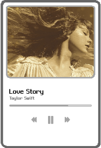
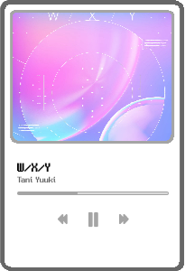
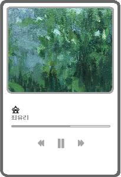

-

- 발매일
- 상세 내용
- 키워드
2008.09.02
빅 머신 레코드를 통하여 음반의 리드 싱글로 발매. 가사에서는 주인공의 가족과 친구들이 알지 못하는 로맨스를 노래하고 있으며, swift는 이를 윌리엄 셰익스피어가 쓴 로미오와 줄리엣의 줄거리에서 영감을 받아, 연극에 기초하여 가사를 썼다고 전해짐.
# Country Pop # 서정적
-

- 발매일
- 상세 내용
- 키워드
2021.05.26
Tani Yuuki의 5번째 디지털 싱글. 타이틀의 W/X/Y는 여성의 성염색체(WX)와 남성의 성염색체(XY)를 곱한것으로, 남녀 한쌍을 주제로 한 러브송을 의미.
# J-Pop # 중독적인 멜로디
-

- 발매일
- 상세 내용
- 키워드
2022.08.24
최유리의 6번째 싱글앨범. "사람들 사이에서 나는 고작 키 작은 나무에 불과했다. 너무나 잘 살아가는 주변 사람들이 꼭 큰 나무 같아서 나 또한 그렇게 생긴 나무라 착각했다. 키가 작은 내가 흘린 눈물은 금방 내 발에 닿아 꼭 바다처럼 느껴졌다. 나도 키 큰 나무가 되어 남들과 함께 숲이 되고 싶다. 그 속에서 어울려 살아가고 싶다."
# 인디 포크 # 차분